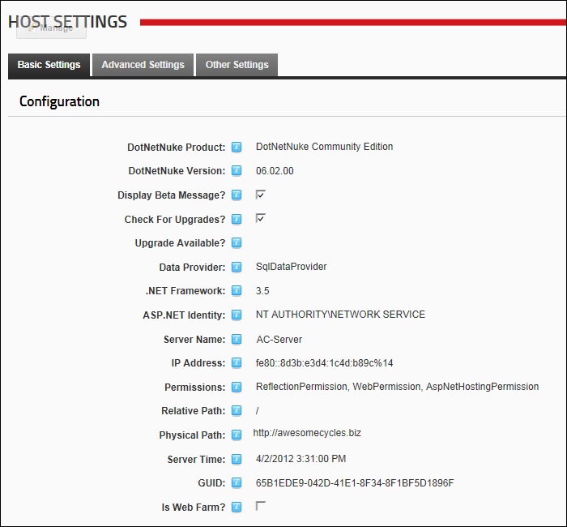

Viewing Configuration Details
How to view configuration details for your DNN installation as set in your Web.config file. The Display Beta Message and Check For Upgrades? fields can be edited from this page.
- Navigate to Host >
 Host Settings.
Host Settings.
- Select the Basic Settings tab.
- Expand the Configuration section. The following details are displayed
- DotNetNuke Product: The DotNetNuke product you are running. E.g. DotNetNuke Platform
- DotNetNuke Version: The version of this DotNetNuke installation. E.g. 06.02.00
- Optional. At Display Beta Message?: to display a message in the title bar of your Browser indicating if you DNN site is running on a beta version.
This field is only displayed if you are running a Beta version of DNN.
- Optional. At Check For Upgrades?: to set this DNN Installation to check the DotNetNuke web site for new framework upgrades.
See "Checking for DNN Framework Upgrades"
- At Upgrade Available?, if the Check For Upgrades setting is enabled, then an icon will be displayed at this field whenever an upgrade is available.
- Data Provider: The provider name which is identified as the default data provider in the web.config file.
- .NET Framework: The .NET Framework version which this DNN installation is running on. This is specified through IIS.
Note: If the current Framework is not being used, the Update Site to current Framework link is displayed.
- ASP.NET Identity: The Windows user account under which this DNN installation is running. This account requires folder permissions on the server.
- Server Name: The Name of the Server.
- IP Address: The IP Address of the Server.
- Permissions: Code Access Security is used to minimize the attack surface however some aspects of DotNetNuke need different permissions to fulfill their tasks. When retrieving data from the database Reflection is needed and when accessing outside websites such as with the News feed module WebPermission is needed.
- Relative Path: If the site is in a virtual directory the relative path from the root is displayed here as shown below. The site this image was taken from was running on Vista Ultimate IIS 7 as a Virtual Directory.
- Physical Path: The physical path is the path to the root of the site. This is the Server.MapPath result.
- Server Time: Displays the current date and time of the web server.
- GUID: The GUID (Global Unique Identifier) is a unique identifier that can be used by module developers to create unique licenses per site.
- Is Web Farm?: If this check box is checked
 then this DNN installation is running in a web farm configuration. This setting can be enabled or disabled in the root configuration file for your site.
then this DNN installation is running in a web farm configuration. This setting can be enabled or disabled in the root configuration file for your site.

Viewing Configuration Details